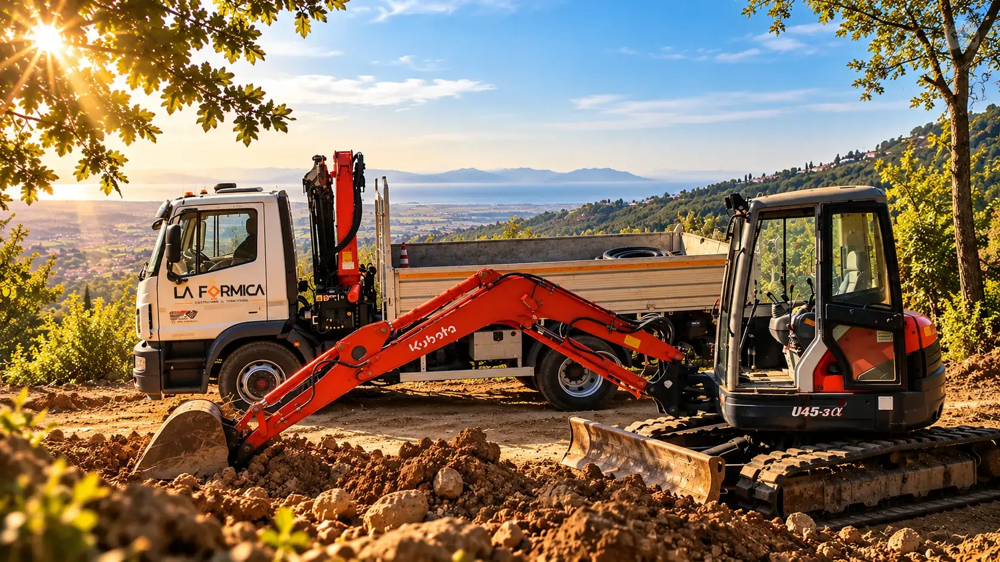
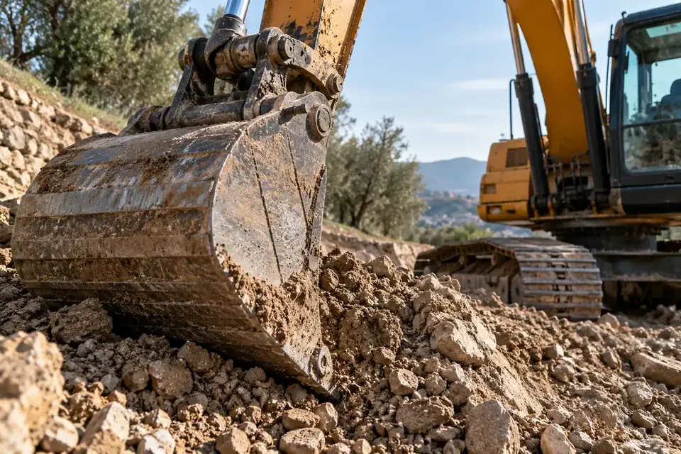
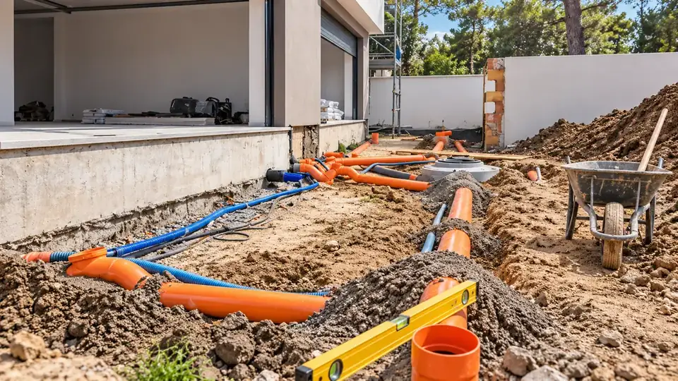
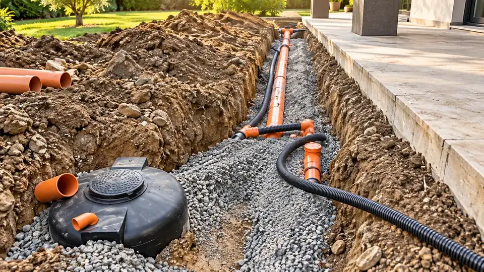
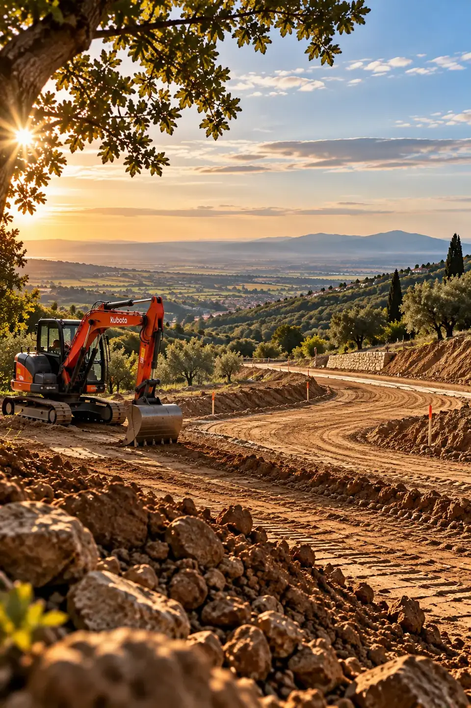
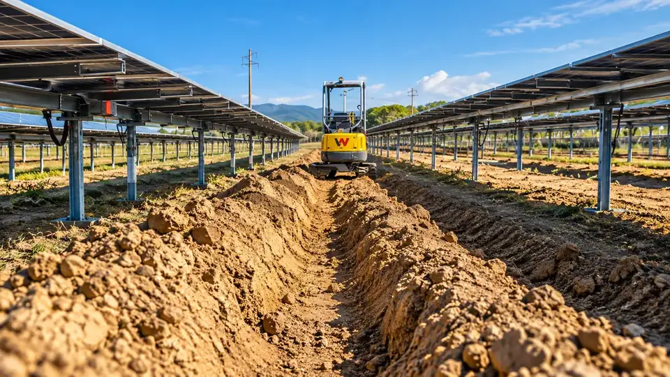
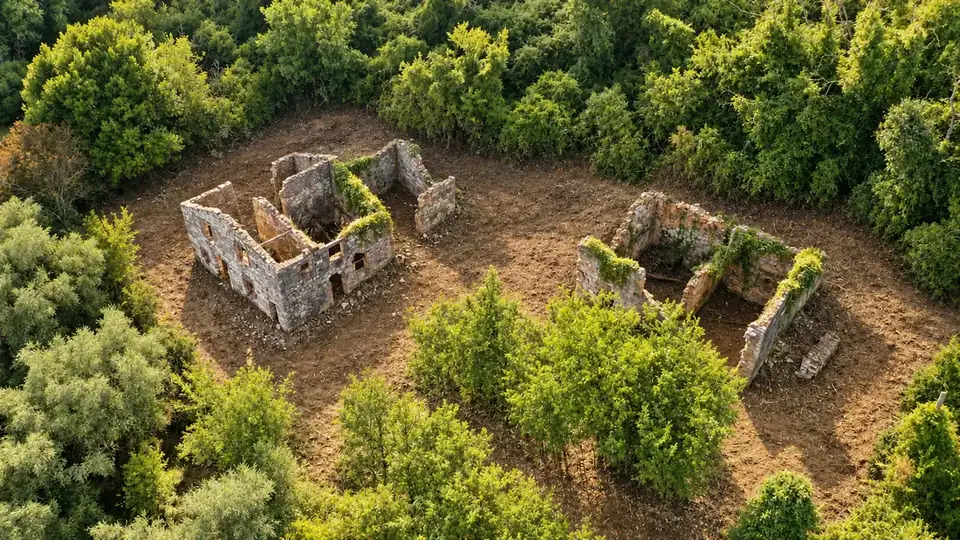

Diamo formaal territorio.
Movimento terra, edilizia rurale e cura del territorio per privati, aziende ed enti. Un'unica squadra, dal primo sopralluogo alla consegna dell'area.
Otto competenze, un solo interlocutore.
Soluzioni su misura per ogni intervento, dalla preparazione del terreno alla sistemazione finale.

Movimento terra
Scavi, sbancamenti e livellamenti per preparare ogni area con precisione.

Opere di urbanizzazione
Sottoservizi, reti delle acque e percorsi: le infrastrutture che non si vedono.

Edilizia stradale
Strade, piazzali e accessi, dal sottofondo alla pavimentazione.

Sistemazioni esterne residenziali
Giardini, vialetti e accessi per abitazioni in pianura, collina e montagna.

Sistemazioni esterne rurali
Poderi e proprietà di campagna organizzati nel rispetto del territorio.

Opere civili per il fotovoltaico
Preparazione dei terreni e opere civili a supporto degli impianti.

Opere forestali
Pulizia e manutenzione di boschi e terreni per renderli di nuovo accessibili.

Demolizioni
Demolizioni pianificate in sicurezza, con gestione dei materiali.

Determinati nel lavoro, uniti in ogni progetto.
La Formica nasce dal lavoro di squadra e dalla determinazione di chi conosce il cantiere. Investiamo in competenze, mezzi e attrezzature per affrontare ogni contesto, dai giardini di casa ai terreni più impegnativi.
Ogni intervento parte dall'ascolto del cliente e dalla conoscenza del territorio.
Capire l'esigenza prima di proporre la soluzione.
Parco macchine strutturato e in crescita.
Ognuno porta esperienza, insieme si consegna.
Dal sopralluogo alla consegna.
Ascolto
Ci racconti cosa ti serve: lo valutiamo insieme, anche con il tuo progettista.
Sopralluogo
Leggiamo il luogo: terreno, accessi, acque, vincoli.
Preventivo
Una proposta chiara sulle lavorazioni e sui tempi.
Esecuzione
Squadra e mezzi propri, area consegnata pulita e pronta.